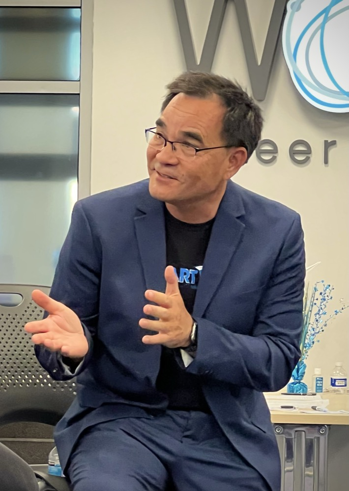

I'm Mash Ashley — 25 years, four exits, and a track record of turning stalled ideas into real, self-sustaining companies. I work with growth-stage founders to sharpen the decisions that actually move the business.
Not enough leads. Messaging that doesn't land. A funnel that leaks. They look like marketing problems — but underneath, they're almost always strategy problems: unclear positioning, a fuzzy customer, no real focus. Fix the root and the symptoms take care of themselves. That's the work I do — improving the quality of the decisions the whole business rests on.
Senior, judgment-first guidance on the decisions that move a business forward — not tactics for their own sake.
Get crisp on what you are, who you're for, and why you win — so everything downstream gets easier.
Replace anecdotes and assumptions with real discovery, so decisions rest on evidence, not hunches.
Say the thing that makes the right people lean in — and stop trying to talk to everyone.
A focused motion that fits your stage and market, instead of scattered activity that burns cash.
A trusted thought partner in your corner, so you make faster, better calls with less second-guessing.
Turn one-off wins into repeatable systems the business can run without depending on any one person.
I've co-founded and scaled four startups to successful exits, advised three companies to billion-dollar outcomes — an IPO, a merger, and a private-equity deal — launched a startup incubator at San José State University, and taught hundreds of founders as an adjunct professor. My whole career sits at the intersection of innovation, strategy, and execution.

And these days a visible body of work beats a resume — it's evidence, not claims. So I help founders build both: the business, and the reputation that makes people trust them before the first conversation.
From working with me directly to learning alongside other founders.
Ongoing, senior guidance on the decisions that matter — positioning, customers, messaging, and go-to-market. For founders with real traction who'd rather not figure it out alone.
Book 30 minutes →A community of growth-stage founders learning alongside each other — peer groups, workshops, and candid conversation about what actually works.
Explore the community →Every Thursday I sit down with founders and leaders — from first-time builders to CEOs scaling past $10M — to unpack what really works.
Listen in →Book thirty minutes and ask me anything about your business. Walk away with real insight and a quick win or two — and a feel for what working together is like.
Book 30 minutes with me